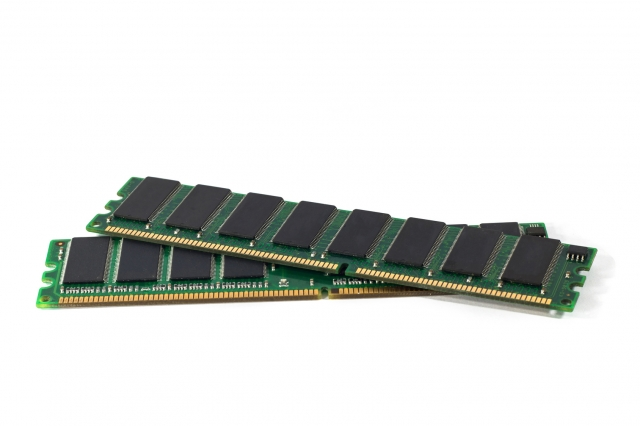

Mémoire RAM
La mémoire, ou RAM, fournit à votre processeur et à votre carte graphique les ressources dont ils ont besoin pour fonctionner correctement. Plus vous disposez de gigaoctets de mémoire, plus votre système sera rapide, fluide, et plus il supportera des taux de rafraîchissement élevés. Ajouter de la RAM est l’un des moyens les plus rapides, faciles et abordables d’améliorer les performances d’un PC gamer. Peu importe votre budget, s’équiper de la quantité maximale de mémoire est une étape essentielle du montage d’un PC gamer.
